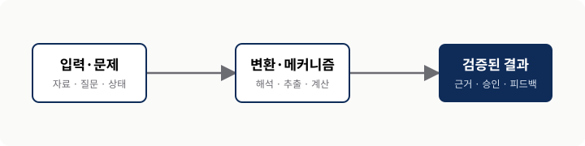

AIML Quant{{STUDY_TITLE}}
Study Report · {{CHAPTERS}}
{{DECK_TITLE}}
{{SUBTITLE}}
Section 00 · Executive Summary
0. 핵심 요약
One Sentence발표가 끝난 뒤에도 기억해야 할 핵심 결론 한 문장을 적는다.
이 장이 다루는 문제, 기존 접근의 한계, 저자의 핵심 아이디어와 왜 중요한지를 발표자의 언어로 설명한다. 슬라이드 문장을 늘이지 말고 처음 읽는 사람도 장의 논리를 따라갈 수 있는 독립 문서로 쓴다.
핵심 질문
- 문제 — 어떤 기존 방식이 왜 충분하지 않은가?
- 메커니즘 — 핵심 구성요소의 입력과 출력은 어떻게 이어지는가?
- 판단 — 언제 적용하고 어디에서 통제해야 하는가?
| 단계 | 질문 | 주장 | 실무 판단 |
|---|---|---|---|
| 01 | 핵심 질문 | 저자의 주장 | 적용·비적용 기준 |
| 02 | 다음 질문 | 작동 방식 | 검증할 증거 |
교재 §[원본 절 번호]
[원본 절 번호] [원본 절 제목]
핵심 질문
이 절에서 이해할 질문과 원서의 핵심 답을 적는다.
[원본 소제목]
처음 등장하는 용어와 필요한 배경을 설명하고, 앞 절의 문제에서 이 개념이 왜 필요한지 연결한다.
원서의 논증을 따라 입력에서 결과가 나오는 중간 단계를 설명한다. 원서의 사례·조건을 보존하고, 추가한 작은 예제는 이해를 위한 예라고 구분한다.

그림을 읽는 순서와 조건을 설명하고 원본 위치·재구성 범위를 적는다.도해에서 관찰할 차이를 본문의 주장에 연결한다. 원래 없는 수치나 결과를 예시 자산에서 가져오지 않는다.
실습 · [확인할 질문]
입력 데이터·기간·실행 전제와 이 코드가 확인할 개념을 설명한다.
# 실제 노트북의 필요한 코드와 변수 정의를 발췌한다.[같은 실험의 실제 표·차트·텍스트 출력과 단위를 배치한다. 미실행이면 결과가 없음을 적는다.]
출력을 어떻게 읽고 어디까지 해석할 수 있는지 설명한다. 다른 데이터의 개념 실험은 원서 수치 재현과 구분한다.
노트북 안내 링크 · 셀 ID/함수 · 실행일 또는 저장 출력 · 비교 범위.이 절의 결론과 적용 조건을 연결한다. 원서에 없는 보충은 필요한 위치에서 간결하게 표시한다.
Appendix A · Glossary
핵심 용어
| 용어 | 이 장에서의 의미 |
|---|---|
| 핵심 용어 A | 비슷한 개념과 구분되는 간결한 정의. |
| 핵심 용어 B | 이 장의 맥락에서 사용하는 범위. |
Appendix B · References
참고 자료와 도형 출처
- [1]교재 챕터의 서지 정보와 사용 범위.
- [2]외부 논문·공식 문서·도형의 직접 출처.